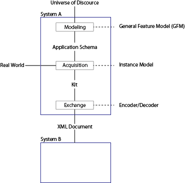
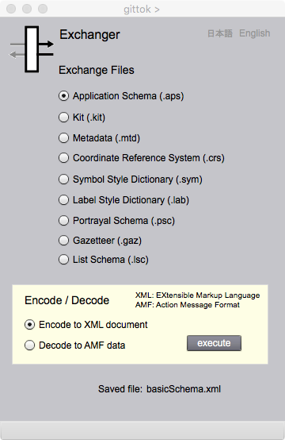

Exchanger
データ交換
はじめに
gittokでは，外部記憶装置に保存されるデータは，Adobeが提供するAMF形式になります．この形式は，Adobe固有の形式なので，他のシステムで読み込むことは困難です．そこで，Exchangerを使って，データをXML形式に変換して，別のシステムとデータ交換できるようにします．ただし外部のシステムは，gittokで使われるXML文書のルールを理解しなければいけません．このルールについては，別途説明しますが，ここではまずデータ交換の基本的な概念を説明し，次にExchangerページの使用法を解説します．
データ交換とは
複数の異なる情報システムがデータを交換するためには，それらが共通的に理解できる中間的な形式でデータを作成できるようにすると便利です．中間的な形式でデータを作成することは符号化 (encoding) といいます．一方で，中間的な形式のデータを自らのシステムに取り込むことを復号化（decoding）といいます．もし，交換するたびに翻訳することを考えると，情報システムの数の２乗の数だけ翻訳プログラムが必要になりますが，共通の形式に翻訳する場合はシステムの数だけ翻訳プログラムがあればいいことになります．
gittokが出力するXML文書は，ISO/TC 211やOGCが公開している標準には準拠しません．しかし，それらを単純化した規則を使っていますので，gittokを学習すれば，これらの標準をより簡単に理解することができるようになるでしょう．

図１．地理データのモデリング，取得，及び符号（復号）化
さらに，gittokでは，応用スキーマ，メタデータ，座標参照系，記号及び注記のスキーマ，そして描画スキーマなどをXML文書として符号化することができます．
Exchangerの操作画面

図２．Exchanger ページ
FIELDS
Saved file:
交換のためにファイルがセーブされると、その名前が、表示されます．
BUTTONS
Exchange Files
交換するファイルの種類を指定します．
Encode/decode
符号化するか，復号化するかを選択します．
execute
符号化または復号化を実行します．結果は，指定したフォルダーに入ります．XML文書の場合は適当なブラウザーやパーサで確認することができます．AMF形式のキットは，Editor r等で，確認をすることができます．
日本語
今あなたが読んでいるドキュメントが表示されます．
English
You can read the tutorial written in English.